Seks nye animerte bakgrunner. Rolig bevegelse, dype farger og plass til sangteksten. Alt fungerer uten internett.

GRØNN · FLYTENDE LYS
BLÅ · ROLIGE BØLGER
VARM · STILLE GLØD
LILLA · MYKE SLØR

PETROL · LYSFLATER

KOBBER · ÅPNE RINGER